공조냉동기계기사(구) (2012-08-26 기출문제)
1과목: 기계열역학
1. 보일러 입구의 압력이 9800 kN/m2 이고, 응축기의 압력이 4900 N/m2 일 때 펌프 일은 약 몇 kJ/kg 인가? (단, 물의 비체적은 0.001 m3/kg 이다.)
- -9.79
- -15.17
- -87.25
- -180.52
(정답률: 73%)

2. 피스턴-실린더 장치 내에 있는 공기가 0.3m3에서 0.1m3으로 압축되었다. 압축되는 동안 압력과 체적 사이에 P=aV-2의 관계가 성립하며, 계수 a=6 kPaㆍm2 이다. 이 과정 동안 공기가 한 일은 얼마인가?
- -53.3 kJ
- -1.1 kJ
- 253 kJ
- -40 kJ
(정답률: 57%)
3. 어떤 유체의 밀도가 741 kg/m3 이다. 이 유체의 비체적은 약 몇 m3kg인가?
- 0.78×10-3
- 1.35×10-3
- 2.35×10-3
- 2.98×10-3
(정답률: 75%)
4. 1 kg의 기체가 압력 50 kPa, 체적 2.5m3 상태에서 압력 1.2 MPa, 체적 0.2m3의 상태로 변하였다. 엔탈피의 변화량은 약 몇 kJ 인가? (단, 내부에너지의 증가 U2-U1=0이다.)
- 306
- 206
- 155
- 115
(정답률: 62%)
5. 주위의 온도가 27℃일 때, -73℃에서 1kJ의 냉동효과를 얻으려 한다. 냉동 사이클을 구동하는데 필요한 최소일은 얼마인가?
- 2 kJ
- 1.5 kJ
- 1 kJ
- 0.5 kJ
(정답률: 61%)
6. 열교환기의 1차 측에서 100kPa의 공기가 50℃로 들어가서 30℃로 나온다. 공기의 질량유량은 0.1 kg/s이고, 정압비열은 1 kJ/kgㆍK로 가정한다. 2차 측에서 물은 10℃로 들어가서 20℃로 나온다. 물의 정압비열은 4 kJ/kgㆍK로 가정한다. 물의 질량유량은?
- 0.0⑤ kg/s
- 0.01 kg/s
- 0.⑤ kg/s
- 0.10 kg/s
(정답률: 64%)
7. 다음 냉동사이클의 에너지 전달량으로 적절한 것은?
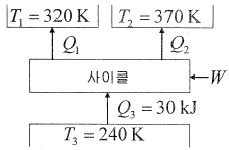
- Q1=20 kJ, Q2=20 kJ, W=20 kJ
- Q1=20 kJ, Q2=30 kJ, W=20 kJ
- Q1=20 kJ, Q2=20 kJ, W=10 kJ
- Q1=20 kJ, Q2=15 kJ, W=5 kJ
(정답률: 73%)
8. 실린더 지름이 7.5 cm이고, 피스톤 행정이 10 cm인 압축기의 지압선도로부터 구한 평균유효압력이 200 kPa 일 때, 한 사이클당 압축일은 약 몇 J인가?
- 12.4
- 22.4
- 88.4
- 128.4
(정답률: 66%)
9. 공기를 300 K에서 800K로 가열하면서 압력은 500 kPa에서 400 kPa로 떨어뜨린다. 단위질량당 엔트로피 변화량은 약 얼마인가? (단, 비열은 일정하다고 가정하며, 300 K에서 공기비열 Cp=1.004 kJ/kgㆍK 이다.)
- 0.15 kJ/kgㆍK
- 1.5 kJ/kgㆍK
- 1.⑤ kJ/kgㆍK
- 0.1⑤ kJ/kgㆍK
(정답률: 53%)
10. 냉동용량이 35 kW인 어느 냉동기의 성능계수가 4.8 이라면 이 냉동기를 작동하는 데 필요한 동력은?
- 약 9.2 kW
- 약 8.3 kW
- 약 7.3 kW
- 약 6.5 kW
(정답률: 76%)
11. 이상적인 냉동사이클의 기본 사이클은?
- 브레이튼 사이클
- 사바테 사이클
- 오토 사이클
- 역카르노 사이클
(정답률: 73%)
12. 밀폐계에서 기체의 압력이 500 kPa로 일정하게 유지되면서 체적이 0.2 m3에서 0.7 m3로 팽창하였다. 이 과정 동안에 내부 에너지의 증가가 60 kJ 이었다면 계(系)가 한 일은 얼마인가?(오류 신고가 접수된 문제입니다. 반드시 정답과 해설을 확인하시기 바랍니다.)
- 450 J
- 350 J
- 250 J
- 150 J
(정답률: 69%)
13. 다음 중 이상기체의 정적비열(Cv)과 정압비열(Cp)에 관한 관계식으로 옳은 것은? (단, R은 기체상수이다.)
- Cv - Cp = 0
- Cv - Cp = R
- Cp - Cv = R
- Cv - Cp = R
(정답률: 80%)
14. 체적이 150 m3인 방 안에 질량이 200 kg이고 온도가 20℃인 공기(이상기체상수 = 0.287 kJ/kgㆍK)가 들어 있을 때 이 공기의 압력은 약 몇 kPa 인가?
- 112
- 124
- 162
- 184
(정답률: 69%)
15. 상온의 실내에 있는 수은기압계의 수은주가 730 mm 높이 였다면, 이때 대기압은 얼마인가? (단, 25℃기준, 수은 밀도=13534 kg/m3)
- 9.68 kPa
- 96.8 kPa
- 4.34 kPa
- 43.4 kPa
(정답률: 57%)
16. 증기압축식 냉동사이클용 냉매의 성질로 적당하지 않은 것은?
- 증발잠열이 크다.
- 임계온도가 상온보다 충분히 높다.
- 증발압력이 대기압 이상이다.
- 응고온도가 상온 이상이다.
(정답률: 60%)
17. 대류 열전달계수와 관계가 없는 것은?
- 유체의 열전도율
- 유체의 속도
- 고체의 형상
- 고체의 열전도율
(정답률: 41%)
18. 다음 중 엔트로피에 대한 설명으로 맞는 것은?
- 엔트로피의 생성항은 열전달의 방향에 따라 양수 또는 음수일 수 있다.
- 비가역성이 존재하면 동일한 압력 하에 동일한 체적의 변화를 갖는 가역과정에 비해 시스템이 외부에 하는 일이 증가한다.
- 열역학 과정에서 시스템과 주위를 포함한 전체에 대한 순 엔트로피는 절대 감소하지 않는다.
- 엔트로피는 가역과정에 대해서 경로함수이다.
(정답률: 49%)
19. 반데발스(van der Waals)의 상태 방정식은
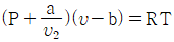
로 표시된다. 이 식에서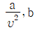
는 각각 무엇을 고려하는 상수인가?- 분자간의 작용 인력, 분자간의 거리
- 분자간의 작용 인력, 분자 자체의 부피
- 분자 자체의 중량, 분자간의 거리
- 분자 자체의 중량, 분자 자체의 부피
(정답률: 64%)
20. 최고온도 1300 K와 최저온도 300 K 사이에서 작동하는 공기표준 Brayton 사이클의 열효율은 약 얼마인가? (단, 압력비는 9, 공기의 비열비는 1.4 이다.)
- 30%
- 36%
- 42%
- 47%
(정답률: 46%)
2과목: 냉동공학
21. 공기를 냉각시키는 증발기의 증발관 표면에 착상된 서리(frost)를 제상하는 방법으로 틀린 것은?
- 고압가스 제상(hot gas defrost)
- 살수 제상(water spray defrost)
- 전열식 제상(electric defrost)
- 질소 제상(N2 spray defrost)
(정답률: 72%)
22. 운전 중인 냉동장치의 저압축 진공게이지가 50cmHg를 나타내고 있다. 이때의 진공도는 약 얼마인가?
- 65.8%
- 40.8%
- 26.5%
- 3.4%
(정답률: 69%)
23. 식품을 동결하고자 할 때 사용되는 최대빙결정생성대의 일반적인 온도범위는 얼마인가?
- 5~-1℃
- -1~-5℃
- -8~-18℃
- -10~-25℃
(정답률: 60%)
24. 윤활유의 구비 조건이 아닌 것은?
- 응고점이 높을 것
- 인화점이 높을 것
- 점도가 알맞을 것
- 고온에서 탄화하지 않을 것
(정답률: 80%)
25. 흡수식 냉동기에서 냉매의 순환경로는?
- 증발기 → 흡수기 → 재생기 → 열교환기
- 증발기 → 흡수기 → 열교환기 → 재생기
- 증발기 → 재생기 → 흡수기 → 열교환기
- 증발기 → 열교환기 → 재생기 → 흡수기
(정답률: 72%)
26. 두께 30cm의 벽돌벽이 있다. 내면의 온도가 21℃, 외면의 온도가 35℃일 때 이 벽을 통해 흐르는 열량은 약 몇 kcal/m2h 인가? (단, 벽돌의 열전도율 λ=0.8kcal/mh℃ 이다.)
- 32
- 37
- 40
- 43
(정답률: 77%)
27. 냉동장치에 이용되는 응축기에 관한 설명 중 틀린 것은?
- 증발식 응축기는 주로 물의 증발로 인해 냉각하므로 잠열을 이용하는 방식이다.
- 이중관식 응축기는 좁은 공간에서도 설치가 가능하므로 설치면적이 적고, 또 냉각수량도 적기 때문에 과냉각 냉매를 얻을 수 있는 장점이 있다.
- 입형 셀 튜브 응축기는 설치면적이 적고 전열이 양호하며 운전 중에도 냉각관의 청소가 가능하다.
- 공냉식 응축기는 응축압력이 수냉식보다 일반적으로 낮기 때문에 같은 냉동기일 경우 형상이 작아진다.
(정답률: 45%)
28. 다음 중 증발하기 쉬운 액체를 이용한 냉동방법이 아닌 것은?
- 증기분사식 냉동법
- 열전냉동법
- 흡수식 냉동법
- 증기압축식 냉동법
(정답률: 74%)
29. 다음 중 빙축열시스템의 분류에 대한 조합으로 적당하지 않은 것은?
- 정적제빙형 - 관내착빙형
- 정적제빙형 - 캡슐형
- 동적제빙형 - 관외착빙형
- 동적제빙형 - 과냉각아이스형
(정답률: 72%)
30. 독성이 거의 없고 금속에 대한 부식성이 적어 식품냉동에 사용되는 유기질 브라인(brine)은 어느 것인가?
- 프로필렌글리콜
- 식염수
- 염화칼슘
- 염화마그네슘
(정답률: 77%)
31. 암모니아 냉동기에서 압축기의 흡입 포화온도 -20℃, 응축온도 30℃, 팽창변 직전온도 25℃, 피스톤 압출량 288m3/h일 때 냉동능력은 약 몇 냉동톤인가? (단, 압축기의 체적효율 ηv=0.8, 흡입냉매엔탈피 h1=396 kcal/kg, 냉매흡입 비체적 v=0.62m3/kg. 팽창변 직전의 냉매의 엔탈피 h3=128 kcal/kg 이다.)
- 25 RT
- 30 RT
- 35 RT
- 40 RT
(정답률: 63%)
32. 냉동부하가 15RT인 냉동장치의 증발기에서 열 통과율이 6 kcal/m2h℃, 유체의 입, 출구 평균온도와 냉매의 증발 온도와의 차가 14℃일 때 전열면적은 약 얼마인가?
- 592.9m2
- 1383.3m2
- 526.5m2
- 782.4m2
(정답률: 74%)
33. R 22 수냉식 응축기에서 최초 설치 시에는 냉매 응축온도가 25℃이며 입, 출구 수온이 20℃, 23℃이었던 것이 장기간 사용 후에는 출구 수온이 22℃가 되었다. 최초 설치시보다 열통과율이 약 몇 % 나 저하하였는가?
- 7%
- 17%
- 73%
- 83%
(정답률: 47%)
34. 냉동장치 내에 수분이 혼입된 경우에 대한 설명으로 적합하지 않은 것은?
- 프레온 냉동장치에서는 프레온과 수분이 상호 작용하여 내부에 부식을 일으킨다.
- 암모니아 냉동장치의 경우 팽창밸브가 막히는 현상이 프레온 냉매의 경우보다 더 많이 발생한다.
- 암모니아 냉매의 경우 유탁액현상(emulsion)이 발생한다.
- 프레온 냉매의 경우 동부착현상(coppper plating)이 발생한다.
(정답률: 68%)
35. 흡수식 냉동사이클 선도와 설명이 잘못된 것은?
- 듀링선도는 수용액의 농도, 온도, 압력 관계를 나타낸다.
- 엔탈피-농도(h-X)선도는 흡수식냉동기 설계 시 증발잠열, 엔탈피, 농도 등을 나타낸다.
- 듀링선도에서는 각 열교환기내의 열교환량을 표현할 수 없다.
- 모리엘(P-h)선도는 냉동사이클의 압력, 온도, 비체적 등을 이용 각종 계산을 할 수 있다.
(정답률: 49%)
36. 시간당 2000kg의 30℃ 물을 -10℃의 얼음으로 만드는 능력을 가진 냉동장치가 있다. 아래 조건에서 운전될 때 이 냉동장치의 압축기 소요동력(kW)은 약 얼마인가? (단, 열손실은 무시하고, 응축기 냉각수 입구온도 : 32℃, 냉각수 출구온도 : 37℃, 냉각수의 유량 : 60m3/h, 물의 비열 : 1kcal/kg℃, 얼음의 응고잠열 : 80kcal/kg℃, 얼음의 비열 : 0.5kcal/kg℃ 이다.)
- 71 kW
- 76 kW
- 78 kW
- 81 kW
(정답률: 50%)
37. 냉동장치에서 가스 퍼지(Gas purger)를 설치하는 이유로서 옳지 않은 것은?
- 냉동능력 감소를 방지한다.
- 응축압력 상승으로 소요동력이 증대하는 것을 방지한다.
- 응축기 전열작용의 저하를 방지한다.
- 불응축 가스의 배제를 가능한 한 억제한다.
(정답률: 78%)
38. 고속다기통 왕복동식 압축기의 특징으로 틀린 것은?
- 언로우더기구에 의한 자동제어와 자동운전이 용이하다.
- 강제급유 방식이므로 윤활유의 소비량이 비교적 많다.
- 실린더수가 많아 정적, 동적 평형이 양호하여 진동이 비교적 적다.
- 회전수는 암모니아 냉동장치보다 프레온 냉동장치가 작다.
(정답률: 57%)
39. 다음 그림과 같이 수냉식과 공냉식 응축기의 작용을 혼합한 형태의 응축기는?
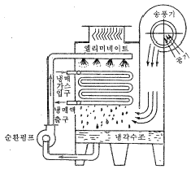
- 증발식 응축기
- 셀코일 응축기
- 공냉식 응축기
- 7통로식 응축기
(정답률: 77%)
40. 공기열원 수가열 R-22 열펌프 장치를 가열운전(시운전)하는 상태에서 압축기 토출밸브 부근에서 토출가스온도를 측정하였더니 130~140℃로 나타났다. 이러한 운전상태로 나타난 원인이나 상황 등과 관계가 없는 설명은?
- 냉매 분해가 일어날 가능성이 있다.
- 팽창밸브를 지나치게 교축 하였을 가능성이 있다.
- 공기측 열교환기(증발기)에서 눈에 띄게 착상이 일어나면 이것도 원인이 된다.
- 가열측 순환온수의 유량을 설계값 보다 많게 하는 것도 원인이 된다.
(정답률: 64%)
3과목: 공기조화
41. 감습장치에 대한 설명 중 틀린 것은?
- 냉각 감습장치는 냉각코일 또는 공기세정기를 사용하는 방법이다.
- 압축성 감습장치는 공기를 압축해서 여분의 수분을 응축시키는 방법이며, 소요동력이 적기 때문에 일반적으로 널리 사용된다.
- 흡수식 감습장치는 염화리튬, 트리에틸렌글리콜 등의 액체 흡수제를 사용하는 것이다.
- 흡착식 감습장치는 실리카겔, 활성알루미나 등의 고체 흡착제를 사용한다.
(정답률: 71%)
42. 팬코일유닛(FCU)방식과 유인유닛(IDU)방식은 실내에 설치하는 유닛 외에도 1차공조기를 사용하여 덕트방식을 채용할 수도 있다. 이 방식들을 비교한 설명 중 올바르지 못한 것은?
- FCU는 IDU에 비해 운전 중의 소음이 적고, 동일 능력일 때에는 단가가 싸다.
- IDU에는 전용의 덕트계통이 필요하다.
- FCU에는 내부에 팬(fan)을 가지고 있어 보수할 필요가 있다.
- IDU는 내부(zone)을 합하더라도 하나의 덕트계통만으로 처리가 가능하다.
(정답률: 67%)
43. 침입 회기량을 산정하는 방법으로 잘못된 것은?
- 환기회수법은 방의 체적에 비례하여 시간당 환기량을 체적비율로 환기량을 산정한다.
- 틈새길이법은 침입외기가 창이나 문의 틈새를 통해 들어오므로 이들의 틈새길이를 구하여 산정한다.
- 창의 면적법은 창의 총 면적 및 형식에 따라 산정한다.
- 사용 빈도수에 의한 침입외기량은 실내에 사용인원 1인당 필요한 최소 도입 외기량에 의해 산정한다.
(정답률: 65%)
44. 온풍난방의 특징 줄 옳지 않은 것은?
- 송풍동력이 크며, 설계가 나쁘면 실내로 소음이 전달 되기 쉽다.
- 실온과 함께 실내습도, 실내기류를 제어할 수 있다.
- 외기를 적극적으로 보급할 수 있으므로 실내공기의 오염도가 적다.
- 예열부하가 크므로 예열시간이 길다.
(정답률: 76%)
45. 증기난방과 온수난방을 비교한 것이다. 맞지 않는 것은?
- 주 이용열량은 증기난방은 잠열이고, 온수난방은 현열이다.
- 증기난방에 비하여 온수난방은 방열량을 쉽게 조절할 수 있다.
- 장거리 수송은 증기난방은 발생증기압에 의하여, 온수난방은 자연순환력 또는 펌프 등의 기계력에 의한다.
- 온수난방에 비하여 증기난방은 예열부하와 시간이 많이 소요된다.
(정답률: 75%)
46. 다음 그림과 같은 냉수 코일을 설계하고자 한다. 이때 대수평균 온도차 MTD는 얼마인가?
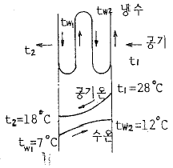
- 10.24℃
- 13.36℃
- 14.28℃
- 15.14℃
(정답률: 82%)
47. 열회수 방식의 특징에 대한 설명이다. 옳은 것은?
- 공기 대 공기의 전열 교환을 직접 이용하는 방식으로 전열교환기가 가장 일반적이다.
- 전열교환기 방식은 외기도입량이 많고 운전시간이 짧은 시설에서 효과적이다.
- 열펌프에 의한 승온이용 방식은 중ㆍ대규모의 건물에서는 부적합하다.
- 전열교환기 및 열펌프이용 방식은 회수열의 축열이 불가능하다.
(정답률: 55%)
48. 실내취득 감열량이 30000 kcal/h 일때 실내온도를 26℃로 유지하기 위하여 15℃의 공기를 송풍하면 송풍량은 약 몇(m3/min)인가? (단, 공기의 비열 0.24 kcal/kg℃, 공기의 비중량 1.2 kg/m3 이다.)
- 158
- 9470
- 6944
- 947
(정답률: 55%)
49. 냉난방 공기조화 설비에 관한 기술 중 틀린 것은?
- 패키지 유니트 방식을 이용하면 센트랄 방식에 비해 공기조화용 기계실의 면적이 적게 소요된다.
- 이중 덕트 방식은 개별제어를 할 수 있는 이점은 있지만 일반적으로 설비비 밎 운전비가 많아진다.
- 냉방부하를 산출하는 경우 형광등의 발열량은 1kW당 약 1000 kcal/h(바라스트 발열 포함)로 산정된다.
- 지역냉난방은 개별냉난방에 비해 일반적으로 공사비는 현저하게 감소한다.
(정답률: 80%)
50. 공조용 열원장치에서 개방식 축열수조의 특징과 거리가 먼 것은?
- 축열조의 열손실분 만큼 열원의 에너지 소비량이 증가한다.
- 공조기용 2차 펌프의 양정이 대단히 작아 동력 소비량을 감소시킬 수 있다.
- 열회수식에 있어서 열 회수의 피크 시와 난방부하의 피크 시가 어긋날 때 이것을 조정할 수 있다.
- 호텔 또는 병원 등에서 발생하는 심야의 부하에 열원의가동 없이 펌프 운전만으로 대응할 수 있다.
(정답률: 47%)
51. 개별 공기조화방식에 사용되는 공기조화기와 관련이 없는 것은?
- 사용하는 공기조화기의 냉각코일로는 간접팽창코일을 사용한다.
- 설치가 간편하고 운전 및 조작이 용이하다.
- 제어대상에 맞는 개별 공조기를 설치하여 최적의 운전이 가능하다.
- 소음이 크고 국소운전이 가능하여 에너지 절약적이다.
(정답률: 53%)
52. 온도 32℃, 상대습도 60%인 습공기 150kg과 온도 15℃, 상태습도 80%인 습공기 50kg를 혼합했을 때 혼합공기의 상태를 나타낸 것은 어느 것인가?
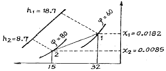
- 온도 23.5℃, 절대습도 0.0134인 공기
- 온도 20.⑤℃, 절대습도 0.0158인 공기
- 온도 20.⑤℃, 절대습도 0.0134인 공기
- 온도 27.75℃, 절대습도 0.0158인 공기
(정답률: 64%)
53. 펌프의 공동현상에 관한 설명이다. 적당하지 않은 것은?
- 흡입 배관경이 클 경우 발생한다.
- 소음 및 진동이 발생한다.
- 임펠러 침식이 생길 수 있다.
- 펌프의 회전수를 낮추어 운전하면 이 현상을 줄일 수 있다.
(정답률: 80%)
54. 환기 종류와 방법이 잘못 연결된 것은?
- 제1종 환기 : 급기팬(급기기)과 배기팬(배기기)의 조합
- 제2종 환기 : 급기팬(급기기)과 강제배기팬(배기기)의 조합
- 제3종 환기 : 자연급기와 배기팬(배기기)의 조합
- 자연환기(중력환기) : 자연급기와 자연배기의 조합
(정답률: 83%)
55. 덕트에 관한 설명 중 올바르지 못한 것은?
- 덕트의 아스팩트비는 일반적으로 4 : 1 이하로 하는 것이 좋다.
- 곡부의 저항은 이와 동일한 마찰저항이 생기는 직선덕트의 길이로 표현된다. 이를 국부저항의 상당길이라 한다.
- 덕트의 국부저항은 곡부 및 분기부 등에서 생기는 와류의 에너지 소비에 따르는 압력손실과 마찰에 의한 압력손실을 합한 것이다.
- 원형덕트와 동일한 풍량, 동일한 단위길이당 마찰저항에서 구한 장방형 덕트의 단면적은 원형덕트의 단면적과 같다.
(정답률: 63%)
56. 다음의 습공기 선도에서 ① - ⑤의 상태변화를 바르게 설명한 것은? (단, 그림에서 ①은 외기, ②는 실내공기, ③은 혼합공기이다.)
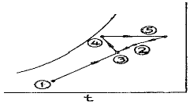
- 가습, 냉각과정이다.
- 감습, 가열과정이다.
- 가습, 가열과정이다.
- 감습, 냉각과정이다.
(정답률: 74%)
57. 에어와셔 내에서 물을 가열하지도 냉각하지도 않고 연속적으로 순환 분무시키면서 공기를 통과시켰을 때 공기의 상태변화는?
- 건구온도가 상승하고, 습구온도는 내려간다.
- 절대온도가 높아지고, 습구온도도 높아진다.
- 상대습도가 상승하면서 건구온도는 낮아진다.
- 건구온도는 상승하나 상대습도는 낮아진다.
(정답률: 75%)
58. 단관식 중력 환수 증기난방의 상향 공급식에서 증기와 응축수가 같은 방향으로 흐르는 관의 기울기로 적당한 것은?
- 1/10 ~ 1/30
- 1/50 ~ 1/100
- 1/100 ~ 1/200
- 1/250 ~ 1/300
(정답률: 63%)
59. 습공기를 가습하는 방법 중 가장 타당하지 않는 것은?
- 순환수를 분무하는 방법
- 온수를 분무하는 방법
- 수증기를 분무하는 방법
- 외부공기를 가열하는 방법
(정답률: 86%)
60. 공기조화설비에서 덕트계에서 발생되는 소음의 방음 대책으로 틀린 것은?
- 발생 소음 자체를 줄인다.
- 음의 투과량을 크게 한다.
- 소음발생원 등을 방음이 필요한 주요 실과 떨어뜨린다.
- 덕트, 배관 등의 관통부를 차음 처리한다.
(정답률: 83%)
4과목: 전기제어공학
61. 그림과 같은 계전기 접점회로의 논리식은?
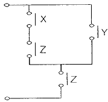
- (X+Y)Z
- X+Y+Z
- (X+Z)Y
- XZ+Y
(정답률: 72%)
62. 철심을 가진 변압기 모양의 코일에 교류와 직류를 중첩하여 흘리면 교류임피던스는 중첩된 직류의 크기에 따라 변하는데 이 현상을 이용하여 전력을 증폭하는 장치는?
- 회전증폭기
- 자기증폭기
- 사이리스터
- 차동변압기
(정답률: 69%)
63. 정현파 교류의 실효값은 최대값보다 어떻게 되는가?
- π배로 된다
- 1/π로 된다
- √2배로 된다.
- 1/√2로 된다
(정답률: 66%)
64. 그림과 같은 전자릴레이회로는 어떤 게이트 회로인가?
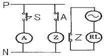
- AND
- OR
- NOR
- NOT
(정답률: 46%)
65. 전력에 대한 설명으로 옳지 않은 것은?
- 단위는 J/s 이다.
- 단위시간의 전기 에너지이다.
- 공률(일률)과 같은 단위를 갖는다.
- 열량으로 환산할 수 있다.
(정답률: 63%)
66. 선형 시불변 회로의 임펄스 응답은 어떻게 구하는가?
- 스탭응답을 미분하여 구한다.
- 스탭응답을 적분하여 구한다.
- 램프응답을 미분하여 구한다.
- 출력응답을 적분하여 구한다.
(정답률: 51%)
67. 전류계와 전압계를 읽었을 때 110[V], 12[A]이면 몇 [kW]의 전력이 소비되는가?
- 1.32
- 3.21
- 120
- 12000
(정답률: 73%)
68. 블록선도에서 신호의 흐름을 반대로 할 때, (a)에 해당하는 것은?
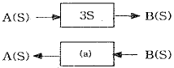
- S
- -3S
- 1/3 * S
- 1/(3S)
(정답률: 72%)
69. 다음 전달함수에 대한 설명으로 옳지 않은 것은?
- 전달함수는 선형 제어계에서만 정의되고, 비선형 시스템에서는 정의되지 않는다.
- 계 전달함수의 분로를 0으로 놓으면 이것이 곧 특성발정식이 된다.
- 어떤 계의 전달함수는 그 계에 대한 임펄스 응답의 라플라스 변환과 같다.
- 입력과 출력에 대한 과도응답의 라플라스 변환과 같다.
(정답률: 38%)
70. 다음 중 피드백 제어계의 특징이 아닌 것은?
- 감대폭의 증가.
- 비선형과 왜형에 대한 효과의 증가
- 계의 특성 변화에 대한 입력 대 출력비의 감도 감소
- 비선형과 왜형에 대한 효과의 감소
(정답률: 46%)
71. 단상유도전동기를 기동할 때 기동토크가 가장 큰 것은?
- 분상기동형
- 콘덴서기동형
- 반발기동형
- 반발유도형
(정답률: 57%)
72. 콘덴서의 정전용량을 변화시켜서 발진기의 주파수를 1[kHz] 로 하고자 한다. 이 때 발진기는 자동제어 용어 중 어느 것에 해당 되는가?
- 목표값
- 조작량
- 제어량
- 제어대상
(정답률: 65%)
73. 그림과 같이 C에 Q[C]의 전하가 충전되어 있다. t=0에서 스위치를 닫으면 R에서 소모되는 에너지 [W]는?
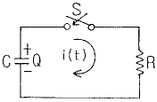
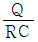
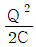
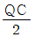
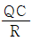
(정답률: 55%)
74. 오버슈트를 감소시키고, 정정 시간을 적게 하는 효과가 있으며 잔류편차를 제거하는 작용을 하는 제어방식은?
- PI 제어
- PD 제어
- PID 제어
- P 제어
(정답률: 68%)
75. 적분시간이 2분, 비례감도가 5 [mA/mV] 인 PI조절계의 전달함수는?
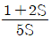
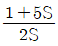
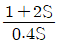
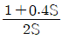
(정답률: 54%)
76. 반지름 3[cm], 권수 2회인 원형코일에 1[A] 의 전류가 흐를 때 원형코일 중심에서 축 상 4[cm] 인 점의 자계의 세기는 몇 [AT/m] 인가?
- 1.8
- 3.6
- 7.2
- 14.4
(정답률: 43%)
77. 회로에서 A와 B간의 합성저항은 몇[Ω]인가? (단, 각 저항의 단위는 모두 [Ω]이다.)
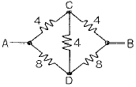
- 2.66
- 3.2
- 5.33
- 6.4
(정답률: 69%)
78. 전자석의 흡인력은 자속밀도 B[Wb/m2]와 어떤 관계에 있는가?
- B1.6에 비례
- B에 비례
- B2에 비례
- B3에 비례
(정답률: 68%)
79. 기전력에 고조파를 포함하고 있으며, 중성점이 접지되어 있을 때에는 선로에 제 3고조파의 충전전류가 흐르고 통신장해를 주는 변압기 결선법은?
- △-△결선
- Y-Y결선
- V-V결선
- △-Y결선
(정답률: 55%)
80. 자동제어기기의 조작용 기기가 아닌 것은?
- 전자밸브
- 서보전동기
- 클러치
- 앰플리다인
(정답률: 74%)
5과목: 배관일반
81. 공조용 덕트의 부속장치로 분기되는 지점에 설치하며 스플릿댐퍼(split damper)라고도 하는 것은?
- 풍량조절 댐퍼(volume damper)
- 캔버스 이음(canvas connection)
- 방화 댐퍼(file damper)
- 가이드 베인(guide vane)
(정답률: 68%)
82. 급수량 산정에 있어서 시간 평균예상 급수량(Qh)이 3000ℓ/h였다면, 순간 최대 예상 급수량(Qp)은 몇 ℓ/min 인가?
- 75 ~100
- 100 ~125
- 125 ~150
- 150 ~ 200
(정답률: 57%)
83. 급수배관의 시공에 관한 설명으로 틀린 것은?
- 수리와 기타 필요시 관속의 물을 완전히 뺄 수 있도록 기울기를 주어야 한다.
- 공기가 모여 있는 곳이 없도록 하여야 하며 공기빼기 밸브를 부착한다.
- 급수관을 지하 매설시 외부로부터 충격이나 겨울에 동파방지를 위해 일반적으로 평지에서는 750mm이상 깊이로 묻어야 한다.
- 급수배관 공사가 끝나면 탱크 및 급속관의 경우에는 1.⑤MPa(10.5kgf/cm2)의 수압시험에 합격하여야 한다.
(정답률: 65%)
84. 냉동장치의 배관공사가 완료된 후 방열공사의 시공 및 냉매를 충전하기 전에 전 계통에 걸쳐 실시하며, 진공시험으로 최종적인 기밀 유무를 확인하기 전에 하는 시험은?
- 내압시험
- 기밀시험
- 누설시험
- 수압시험
(정답률: 73%)
85. 급탕설비에 관한 설명으로 틀린 것은?
- 저탕탱크의 설계에 있어서 저탕량을 적게 하려면 가열능력을 크게 하면 된다.
- 온수보일러에 의한 간접가열방식이 직접가열방식보다 저탕조 내부에 스케일이 생기지 않는다.
- 코일 모양으로 배관된 가열관을 통과하는 동안에 가스불꽃에 의해 가열되어 급탕하는 장치를 순간온수기라 한다.
- 열효율은 양호하지만 소음이 심해 S형, Y형 사일렌서를 부착, 사용증기압력은 1~4MPa인 급탕법을 기수혼합식이라 한다.
(정답률: 69%)
86. 증기난방의 장점이 아닌 것은?
- 온수와 비교해서 열매온도가 높기 때문에 방열면적이 작아진다.
- 실내온도의 상승이 느리고 예열 손실이 많다.
- 배관 내에 거의 물이 없으므로 한랭지에서도 동결의 위험이 적다.
- 열의 운반능력이 커서 시설비가 적어진다.
(정답률: 77%)
87. 배수의 성질에 의한 구분에서 수세식 변기의 배ㆍ소변에서 나오는 배수는?
- 오수
- 잡배수
- 특수배수
- 우수배수
(정답률: 85%)
88. 쿨링레그(Cooling leg)에 대한 설명으로 틀린 것은?
- 쿨링레그와 환수관 사이에는 트랩을 설치하여야 한다.
- 응축수를 냉각하여 재증발을 방지하기 위한 배관이다.
- 관경은 증기 주관보다 한 치수 크게 한다.
- 보온피복을 할 필요가 없다.
(정답률: 59%)
89. LP가스 공급, 소비 설비의 압력손실 요인으로 틀린 것은?
- 배관의 직관부에서 일어나는 압력손실
- 배관의 입하에 의한 압력손실
- 멜보우, 티 등에 의한 압력손실
- 가스미터, 콕크, 밸브 등에 의한 압력손실
(정답률: 64%)
90. 가스배관에 관한 설명으로 틀린 것은?
- 옥내 배관은 매설배관을 원칙으로 한다.
- 부득이 콘크리트 주요 구조부를 통과할 경우에는 슬리이브를 사용한다.
- 가스배관에는 적당한 구배를 두어야 한다.
- 열에 의한 신축, 진동 등의 영향을 고려하여 적절한 간격으로 지지하여야 한다.
(정답률: 81%)
91. 수격현상(water hammer)방지법이 아닌 것은?
- 관내의 유속을 낮게 한다.
- 밸브는 펌프 송출구에서 멀리 설치하고 밸브는 적당히 제어한다.
- 펌프의 플라이 휘일을 설치하여 펌프의 속도가 급격히 변하는 것을 막는다.
- 조압수조(surge tank)를 관선에 설치한다.
(정답률: 76%)
92. 급탕 배관 시공법에 관하여 옳게 설명한 것은?
- 급수관보다 부식이 심하지 않아 가급적 은폐배관을 한다.
- 배관 구배는 중력 순환식은 1/200, 강제 순환식은 1/150 이 표준이다.
- 벽, 바닥 등을 관통할 때에는 강관제 슬리브를 사용한다.
- 복귀탕의 역류방지를 위하여 복귀관에 체크밸브를 설치하되 탕의 저항을 적게하기 위해 2개 이상 설치한다.
(정답률: 52%)
93. 난방 또는 급탕설비의 보온재료로서 부적합한 것은?
- 유리 섬유
- 발포폴리스티렌폼
- 암면
- 규산칼슘
(정답률: 73%)
94. 수직배관에서의 역류방지를 위한 적당한 밸브는?
- 안전밸브
- 스윙식 체크밸브
- 리프트식 체크밸브
- 코크밸브
(정답률: 73%)
95. 하향 공급식 급탕 배관법의 구배는?
- 급탕관은 끝올림, 복귀관은 끝내림 구배를 준다.
- 급탕관은 끝내림, 복귀관은 끝올림 구배를 준다.
- 급탕관, 복귀관 모두 끝올림 구배를 준다.
- 급탕관, 복귀관 모두 끝내림 구배를 준다.
(정답률: 68%)
96. 배수 배관의 시공상 주의점으로 맞지 않는 것은?
- 배수를 가능한 천천히 옥외 하수관으로 유출할 수 있을 것
- 옥외 하수관에서 하수 가스나 쥐 또는 각종 벌레 등이 건물 안으로 침입하는 것을 방지할 수 있는 방법으로 시공할 것
- 배수관 및 통기관은 내구성이 풍부하여야 하며 가스나 물이 새지 않도록 기구상호 간의 접합을 완벽하게 할 것
- 한랭지에서는 배수관이 동결되지 않도록 피복을 할 것
(정답률: 77%)
97. 덕트 단면이 축소되거나 확대될 때에는 가급적 그 각도를 작게 하여 압력손실이 적게 발생되도록 각도를 지키고자 할 때 바람직한 각도는?
- 축소부 20° 이하 확대부 30° 이하
- 축소부 15° 이하 확대부 30° 이하
- 축소부 30° 이하 확대부 15° 이하
- 축소부 10° 이하 확대부 20° 이하
(정답률: 51%)
98. LPG 기화장치의 가열방법에 의한 종류이다. 해당하지 않는 것은?
- 대기의 열 이용방식
- 온수열매체 전기가열방식
- 금속열매체 전기가열방식
- 직화 순간 증발 방식
(정답률: 49%)
99. 강관 이음쇠 중 분기관을 낼 때 사용되는 것이 아닌 것은?
- 티
- 크로스
- 와이
- 엘보우
(정답률: 76%)
100. 증기난방 진공 환수시에 환수는 리프트 이음까지 하향구배에 따라 응축수가 고이면 진공펌프는 이 환수를 끌엉 올린다. 이 때 1단의 흡상높이는 얼마인가?
- 1.0m 이내
- 1.3m 이내
- 1.5m 이내
- 1.8m 이내
(정답률: 70%)
펌프 일 = (출구 압력 - 입구 압력) / (물의 비체적 x 중력 가속도)
여기서, 입구 압력은 9800 kN/m2, 출구 압력은 4900 kN/m2, 물의 비체적은 0.001 m3/kg, 중력 가속도는 9.81 m/s2 이다.
따라서, 펌프 일은 다음과 같이 계산할 수 있다.
펌프 일 = (4900 - 9800) / (0.001 x 9.81) = -4900000 / 9.81 = -499489.8 J/kg
이 값을 kJ/kg 로 변환하면, -499.4898 kJ/kg 이다. 소수점 둘째자리에서 반올림하면, -9.79 이므로 정답은 "-9.79" 이다.